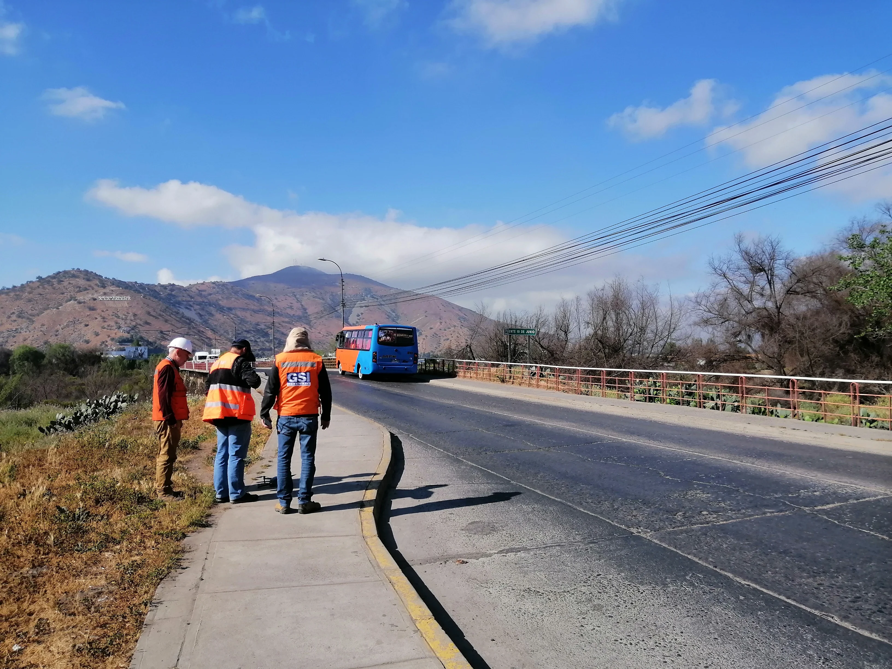
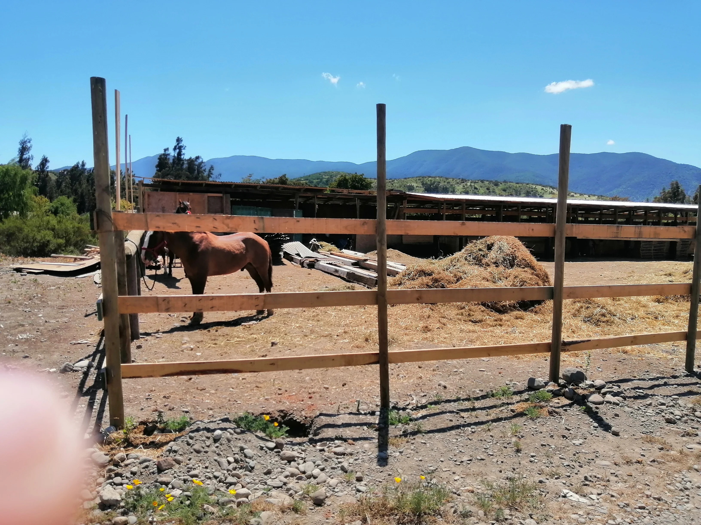
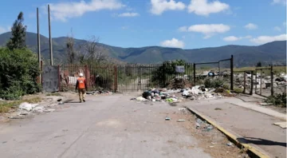
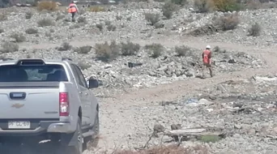
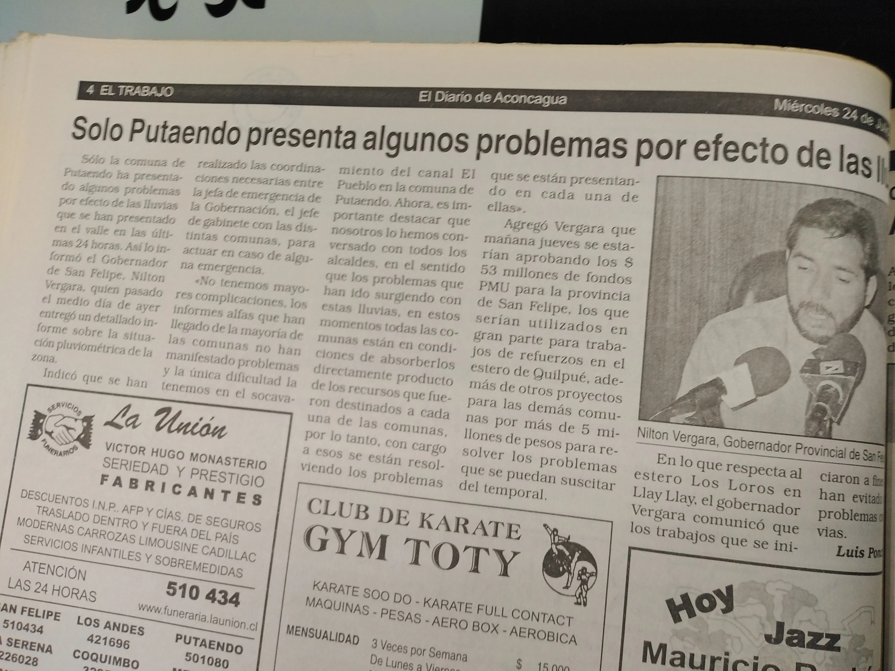

Análisis y Proposición de Fijación de Deslindes de los Ríos Aconcagua, Ligua, Petorca y Putaendo
Encargado de Participación Ciudadana · Gestión socio-territorial · Coordinación institucional
Me desempeñé como Encargado de Participación Ciudadana de GSI Ingeniería en el estudio de fijación de deslindes de los ríos Aconcagua, Ligua, Petorca y Putaendo. Mi trabajo comprendió caracterización socio-territorial, catastro y actualización de actores, coordinación con municipios y servicios públicos, difusión predio a predio en sectores ribereños, revisión histórica de prensa, organización de actividades participativas y sistematización de inquietudes y resultados.

El estudio y mi rol como Encargado PAC
El estudio tuvo como propósito formular una proposición técnica de fijación de deslindes para los ríos Aconcagua, Ligua, Petorca y Putaendo, generando antecedentes para la administración y uso de los bienes nacionales de uso público asociados a estos cauces. Incorporó especialidades técnicas de topografía, hidrología, geomorfología y biodiversidad, desarrolladas por los equipos correspondientes, además de un componente de Participación Ciudadana.
Mi responsabilidad se concentró en la gestión de este último componente por parte de GSI Ingeniería. El componente se desplegó simultáneamente en cuatro cauces y un territorio distribuido entre diez comunas de la Región de Valparaíso, lo que requirió articular actividades desarrolladas en diferentes etapas, caracterización socio-territorial, catastro y actualización de actores, coordinación institucional, difusión territorial y predio a predio, reuniones participativas y sistematización de inquietudes y resultados.
Ver estudio en el Repositorio DIRPLAN del Ministerio de Obras PúblicasCoordinar un proceso PAC en cuatro cauces Aconcagua · Ligua · Petorca · Putaendo · diez comunas
El componente de Participación Ciudadana debió articular actores, organizaciones e instituciones distribuidas en distintos territorios ribereños de la Región de Valparaíso. La extensión territorial del estudio exigió combinar fuentes secundarias, contacto remoto y presencial, recorridos por sectores ribereños y actividades participativas adaptadas a cada uno de los cuatro cauces.
Un proceso de participación distribuido en cuatro cauces y diez comunas
RÍO ACONCAGUA
RÍO LIGUA
RÍO PETORCA
RÍO PUTAENDO

Del catastro al contacto territorial
El componente PAC incorporó una caracterización socio-territorial y la construcción progresiva de una base de organizaciones y actores vinculados a los distintos tramos fluviales.
La caracterización socio-territorial se apoyó en datos censales, antecedentes municipales, información del Instituto Nacional de Estadísticas, del Sistema Nacional de Información Municipal, georreferenciaciones y otras fuentes disponibles para describir población, asentamientos humanos, servicios, vocación productiva y organizaciones sociales.
El catastro de organizaciones combinó reconocimiento territorial con contraste de información proveniente de bases formales y municipales. La actualización de contactos incorporó además validación con Direcciones de Desarrollo Comunitario y confirmación directa con dirigentes y representantes.
Secuencia metodológica del componente PAC
Esquema sintético de los principales componentes del proceso PAC; algunas actividades se desarrollaron de manera complementaria durante distintas etapas del estudio.
Recorrer el territorio predio a predio planificación cartográfica · contacto directo · registro territorial
La difusión inicial incluyó recorridos por propiedades ubicadas en sectores ribereños con el objetivo de informar a propietarios u ocupantes sobre el estudio y sus alcances, mantener registro de los contactos realizados y apoyar la preparación de las etapas posteriores de Participación Ciudadana.
La planificación consideró información cartográfica y territorial disponible en fuentes como INE, SII y Google Earth. El recorrido se organizó de manera sistemática, avanzando propiedad por propiedad y registrando la información de las personas contactadas. Los recorridos se desarrollaron durante 21 días, entre el 23 de enero y el 18 de febrero.


Reconstruir antecedentes históricos del territorio
El trabajo incorporó una revisión histórica de prensa orientada a identificar antecedentes sobre crecidas, inundaciones, ocupaciones de terrenos y otros eventos relacionados con los cuatro cauces estudiados.
La búsqueda cubrió el período 1970–2022 y utilizó fuentes seleccionadas por su representatividad, cobertura territorial y capacidad para abarcar el período histórico analizado, entre ellas El Mercurio de Valparaíso, El Observador de Quillota y El Trabajo de San Felipe. Los antecedentes fueron organizados considerando fecha, fuente, evento, sector afectado y descripción de lo ocurrido, construyendo una memoria documental útil para contextualizar la relación histórica entre los cauces y los territorios ribereños.
Nota metodológica: Los registros corresponden a antecedentes periodísticos recopilados durante el estudio y no constituyen una serie hidrológica ni un registro exhaustivo de todos los eventos ocurridos.

Cerrar el proceso por cauce reuniones finales · preguntas · observaciones · consulta de deslindes
Durante junio de 2024 se realizaron reuniones finales de Participación Ciudadana para los cuatro cauces estudiados. Estas instancias permitieron presentar el desarrollo y resultados del estudio, responder preguntas, recoger observaciones y facilitar la consulta de la proposición de deslindes. Las reuniones fueron desarrolladas separadamente para Aconcagua, Ligua, Petorca y Putaendo, permitiendo abordar preguntas y preocupaciones vinculadas con cada territorio.
Asistencias registradas en reuniones finales por cauce
ACONCAGUA
LIGUA
PETORCA
PUTAENDO
100 asistencias registradas en las cuatro reuniones
Escuchar las implicancias concretas de los deslindes
Las reuniones finales permitieron registrar preguntas e inquietudes vinculadas con las implicancias prácticas de la fijación de deslindes. Los temas variaron entre cauces y participantes, pero incluyeron consultas sobre límites, propiedades colindantes, acceso a información y planos, procedimientos administrativos, usos del suelo, acceso al río, obras públicas y gestión del agua.
El proceso incluyó registros de inquietudes y fichas de sistematización para documentar las preguntas planteadas y las respuestas entregadas durante las actividades.
Encargado de Participación Ciudadana · 2022–2024
Como Encargado de Participación Ciudadana, articulé actividades desarrolladas en cuatro cauces y diez comunas, combinando coordinación institucional, relación con organizaciones comunitarias, difusión territorial, catastro y actualización de actores, reuniones de participación y sistematización de inquietudes y resultados.
Capacidades y productos desarrollados
Responsabilidades y capacidades consolidadas durante el proyecto
Una responsabilidad territorial de mayor escala
Este proyecto marcó una etapa distinta dentro de mi trayectoria en infraestructura hidráulica. Después de mi incorporación al trabajo PAC en San Felipe, pasé a desempeñarme como Encargado de Participación Ciudadana en un estudio que exigía coordinación simultánea de actividades en cuatro cauces, diez comunas y con múltiples tipos de actores.
La experiencia fortaleció una línea de trabajo centrada en combinar caracterización socio-territorial, organización de actores, presencia en terreno, coordinación institucional y sistematización de información para acompañar proyectos técnicos desarrollados sobre territorios complejos.
¿Tu proyecto involucra múltiples territorios, actores e instituciones?